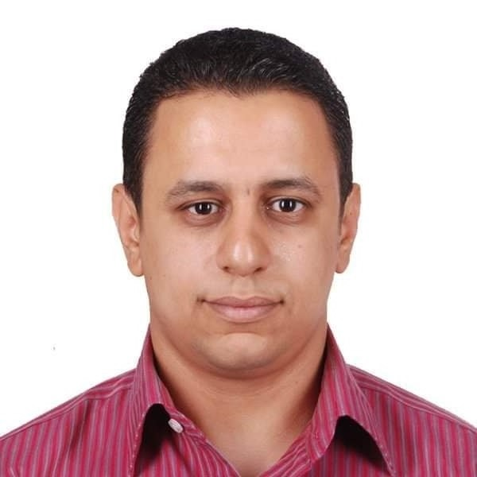

Shadi Milad

Summary
My name's Shadi, I'm a Web Developer from scratch, using HTML, CSS, and Javascript.
I am passionate about this field when creating a website from the idea to the final project,
it's like building an apartment and decorating it, and seeing what you have made at the final,
it's really amazing feeling.
So, I like to help new businesses create their websites to show their products and market it.
Education
-
Post-Graduate Diploma in Microeconomics
Faculty of Economics and Political Science – Cairo University
-
Bachelor of Business Administration
Faculty of Commerce – Cairo University
-
Bachelor of Social Work
Higher Institute of Social Work – Cairo
Work Experience
-
Customer Service Specialist
Greater Cairo Water Company – Cairo, Egypt | February 2008 – Current
- Build solutions for customers based on identified goal, challenge and needs.
- Advocated for company brand with established, new and dissatisfied customers.
-
Web Development
Freelancer
- Design Website from scratch using HTML, Css, and Javascript
- Develop Website using Node.js
Skills
- Full-Stack Web Development
- Digital Marketing
- Programming
- MS Office
- Internet Searching
- Financial Analysis
- Critical Thinking
- Ability to learn
- Time Management
Certifications
- UX Research Cross-Skilling | Udacity Nano-Degree
- Digital Marketing | Udacity Nano-Degree
- CFA Investment Foundation | CFA Institute | 211775
- IT Essential | Cisco
- ICDL | V 4.0 | 1004533
Other